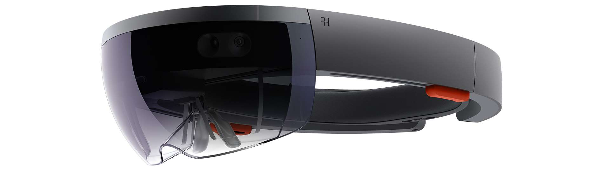

Augmented Reality
Microsoft Hololens
Hololens is a pari of mixed reality smartglasses that is developed by Microsoft and first released in 2016.
Figure 1
Mixed Reality
Hololens has been categorized as an mixed reality (MR) device instead of augmented reality (AR) a device. MR is a very similar idea as AR, except that it's more advanced to support virtual object interacting with real world objects. For example, if a virtual TV screen is set to attach to a wall, the virtual TV screen will stay in the same place with respect to the user's view, see Figure 2. This way, Hololen will create an illusion to make user believe the virtual object exist in the real world.

Figure 2
How Does it work?
Hololens has installed many cameras and sensors to capture information about the surrounding environment. Four environment understanding cameras are used to quickly scan the environment in front of the user within a range of 120x120 degrees, these cameras are the keys for head tracking and surface reconstruction. The depth camera is used to draw the digitalized surroundings by measuring the distance and depth. The depth camera also supports the Kinect technology, which uses a combination of camera data and infrared sensing data to capture user body motion and gestures.